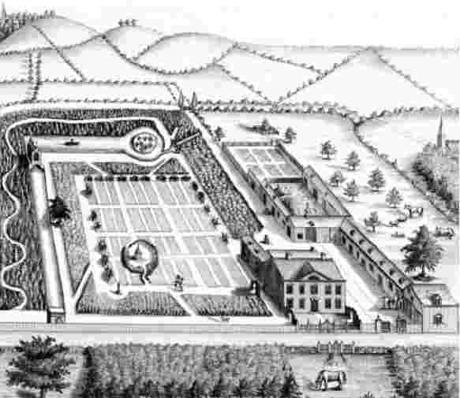

资本主义制度最先在英国出现。因此，合理的做法是考察当时的英国究竟具备哪些条件，为资本主义的发展提供了沃土。的确，关于资本主义起源的一些描述仅仅满足于回答这一问题。埃伦·梅克辛斯·伍德的近作认为，资本主义起源于英格兰。令人惊奇的是，她认为资本主义起源于农业，源自地主、佃户和农民三者间的关系。本章第一部分大体上沿用她的思路提出了类似看法。但我们能就此止步吗？本章后续部分提出，资本主义从根本上必须被视为一种欧洲现象。在探讨资本主义起源的时候，与其问为何资本主义在英国得以发展，不如问为何资本主义出现在欧洲。
19世纪的英国是人类历史上第一个工业社会，但工业化在19世纪成为可能的原因在于资本主义制度在18世纪所取得的突破。市场关系的拓展和消费的增长产生了足够多的需求，从而使投资工业生产有利可图。为购买商品而挣钱的需求促使人们寻求在工业领域的工作机会，尽管这样的工作很单调，而且工厂的工作要求时常很严苛。资本所有者对劳动力的控制使得他们可以通过将工人们集中在厂房、引入机器生产、以新的方式组织劳动等办法提高生产率。
在18世纪，雇主和劳动者之间的关系已经明显具备了资本主义生产关系的性质。工会和劳资纠纷通常与19世纪联系在一起，但是与劳资双方利益相关的有组织的冲突在18世纪就已经出现。在18世纪，大多数手工匠人在某个阶段加入了作为工会前身的“联合组织”。他们这么做的理由很简单，因为集体组织是他们得以保护自己并对抗资本主义雇主的唯一方式，后者一直试图通过降低工资水平或雇用熟练程度较低的工人以达到获取廉价劳动的目的。
在英国西南部，制衣行业的羊毛梳理工人是最早以这种方式组织起来的工人群体之一。1700年，蒂弗顿的羊毛梳理工人成立了“友好社团”，试图与制衣商就最低工资达成协议，并要求对方不得雇用社团之外的工人。他们与雇主发生激烈纠纷，后者打算从爱尔兰进口已经梳理完毕的羊毛，这是现在大家都非常熟悉的利用国外廉价劳动力的早期案例。作为对雇主的反击，羊毛梳理工人焚烧爱尔兰羊毛并袭击了制衣商的住所，他们对私人资产的攻击最终演变为工人们与当地警方之间的激烈战斗。
同样在18世纪的英国，学者们首次就社会的经济基础做了典型的资本主义式的思考。亚当·斯密清楚地阐述了劳动分工、竞争、市场自由运作以及追求利润的生产等做法的好处。当时的主要思想家们审视着在他们周围出现的资本主义经济体的运行机制和规律。此后，卡尔·马克思在19世纪对资本主义模式进行了分析，他通过一套截然不同的意识形态话语，批判并吸收了18世纪思想家们的观点。
资本主义生产为何在18世纪的英国变得如此普遍？其中一个原因可能是之前商业资本主义的发展。正如我们在第一章所见到的那样，商业资本主义，尤其是东印度公司这样的形式，在17世纪取得强势发展。一旦资本通过商业冒险得到积聚，它就可以被用于生产投资。并且，国际贸易的发展使得资本主义生产的商品能面向全球市场销售。在19世纪，兰开夏郡的棉纺织业在很大程度上依赖印度市场。商业资本主义也创造了对公司股份进行投资和交易的新方式。
但是，商业资本主义并没有如想象中那样与资本主义生产紧密联系。在18世纪，生产增长背后的主导因素是国内需求，而不是国外需求。而且，正如我们在第一章中所看到的，那些组织国际性贸易冒险的商人所关心的，与其说是削减生产开支，不如说是从东方和欧洲的商品销售差价中寻求赚钱的机会；他们更感兴趣的是操纵市场，而不是组织生产劳动。如果让他们寻求其他投资方式，他们很可能会选择借高利贷给政府，尤其是那些为战争募集军费的统治者。
资本主义生产 在英国的起源不在于商业资本主义，而是源自16世纪生产、消费和市场在英格兰地区的发展。事实上，当时在诸如采矿业等行业中已经出现大型企业，因此，一部分人认为，工业革命早在16世纪就已发生。但是，当时的大部分生产依然是小规模经营，在手工作坊或家庭的基础上完成，几乎没有任何现代意义上的“工业”。不过，在服装和家用产品（如纽扣和丝带，别针和钉子，食盐、淀粉和肥皂，烟斗、小刀和工具，锁、锅壶盆罐和砖瓦等）制造业方面出现了明显增长。雇佣劳动日渐普遍，在16世纪的英格兰，超过一半的家庭至少部分地依赖工资获得收入。这意味着人们拥有越来越多的钱购买此类商品，而且在他们的日常生活中市场关系变得越来越重要。在当时，以来自伦敦地区的商人为基础建立的全国性市场已经形成，这一现象在欧洲独一无二。
随着雇佣劳动日渐普遍，出现了早期阶级组织的萌芽。之前我们看到，18世纪的手工匠人普遍加入了“联合组织”。不过，在此之前就已经有了工人组织的初始形式。16世纪，“帮工协会”已经在英国发展成熟，其历史可追溯到14世纪。“帮工（journey-man）”一词，字面意思为“白天做工的人”，他们被匠师短期雇用进行劳动。他们的技术水平参差不齐，通常都是刚结束学徒期的手工匠人，还没有掌握足够技能和经验能够成为独立工作的匠师。之后，越来越多的匠师在招募帮工后，竭力阻挠他们取得独立从业的资格，将他们排除在控制技术的行业组织之外，从而将他们留作自己的廉价劳动力。帮工对此做出的回应是成立集体组织以维护他们的权益，作为整体与匠师进行谈判，要求提高工资并改善工作条件。尽管在他们的协会仪式中依然保留了许多中世纪的习俗，但是帮工们也使用了现代化手段。1424年，考文垂服装行业的帮工举行罢工，要求得到更高的工资，地方政府不得不介入以解决争端。因此，手工匠人很早就已经分化为雇主阶层和劳动阶层，并且相互间存在利益冲突。
在这个阶段，大多数手工作坊的生产中不涉及资本投入，但在某些行业中，尤其是服装业，一种新的生产形式正在形成，那就是“分包体系”。以服装制造业为例，商人们用他们的资本买下羊毛，并分包给纺纱工和织布工，随后将纺织完成的布料收回，送往其他行业完成服装制作，并最终销售服装。尽管这一体系由商人组织，但相比从事国际性贸易冒险的商人，此类商人与生产过程的联系更为紧密。事实上，他们最初通常都是手工匠人。
在通往资本主义生产的道路上，这是明确而重要的一步。这并非真正的资本主义生产，因为资本所有者拥有原材料和产品，但并不拥有全部生产方式。比如，织布工通常利用自家的织布机工作。生产被分散为许多小单元，商人并没有控制生产过程或直接监督工人。但是，在这一体系的后续发展形式中，纺织工可能从雇主那里租借织布机，或者从雇主所有的作坊中租借工作场所，由此雇主对工人获得了更多的控制。分包体系逐渐演变为现代工厂，尽管它一度持续与后者平行发展，在纺织业这种体系甚至现在依然存在，因为在纺织业最终的成衣工序通常依旧分包给家庭工人完成。
由此，我们可以将资本主义生产的起源追溯到很久以前，到16世纪甚至更早。英国社会究竟有何特质，能孕育这些早期的资本主义倾向？在我看来，原因在于乡村的社会关系变迁。
封建领主的生活依赖于他们所享有的特权，他们可以占有农民所提供的农产品、劳动或金钱。农民阶层并不自由，而是束缚于他们所劳作的田地。但到了15世纪，市场关系开始逐步取代封建关系。封建领主变为土地所有者，其生活依赖佃户上交的租金，而佃户则在市场上相互竞争，以获得土地租赁。在土地上进行的耕作逐渐成为支付工资的劳动，土地成为可以买卖的财产。
圈地运动始于15世纪晚期，断断续续地维持到19世纪，它象征着土地所有权的转变。圈地运动用栅栏把土地围起来，有时还把所有人公用的土地变为私人财产，把当地原本依赖公用土地生活的人赶离土地。有些时候，圈地运动把传统上分散的、由不同个人所有的小块土地集中起来，变为单一的、更容易管理的单位。结果就是将土地划分为由个人所有的、界限分明的大块单元。由此，圈地运动简化了复杂的中世纪土地使用惯例，将土地转变为可以在市场上进行交易的资产。

图4圈地之后的地貌：18世纪中期莱斯特郡的伯比奇，戴维·威尔斯的庄园，一个被所圈土地包围起来的模范农场
以市场为导向的农业对于资本主义生产的发展起到至关重要的作用。农民间的竞争激发了创新，而生产力的提高使农民可以为更多非农人口提供食物。农民出售农产品，并提供农业劳动换取金钱，从而有钱购买消费品。农业生产率的提高解放了部分劳动力，他们转而从事消费品的生产。随着新的生产中心在农业地区出现，这些消费品越来越多地在农村地区进行生产。
市场关系为何会替代封建关系？人们通常把封建关系衰退的原因归结于黑死病的影响。在15世纪的英格兰，封建领主已不复能行使特权并控制雇农，在很大程度上，这是黑死病所造成的后果。在14世纪中期，黑死病造成人口减少近1/3，并使得剩余的农业劳动力有可能反抗封建领主行使特权的企图。由于劳动力稀缺，农民可以摆脱那些暴虐的封建领主，在其他地方找到工作。但是，黑死病是遍及整个欧洲的现象，在各地造成的后果不尽相同，因此黑死病本身并不能解释在英国率先出现的封建制度的衰落。
那么，为什么封建制度会在英国率先出现衰落？在我看来，原因在于英国的封建制度并不牢固。在封建社会，司法和军事权力分散在地方封建领主手中。特权和武力的分化给予地方封建领主相当大的权力，使他们得以管辖和剥削下属的农民。但是，自从1066年诺曼征服以来，英格兰一直有着相对统一、井然有序、协调一致的君主专制体制。到了16世纪，在都铎王朝治下，英格兰成为欧洲诸国中封建成分最少、最为统一、中央集权最明显的国家。因此，英格兰的统治阶层相比欧洲大陆的封建领主而言，对地方武力的掌控较弱，难以用武力榨取农民阶层的收入盈余。在英国，统治阶层更多依赖由土地所有权、地租、工资劳动等因素提供的经济机制来剥削农民。相对统一的国家也为全国性市场的出现提供了便利。
于是，在试图回答“为什么第一个资本主义社会会在英国出现”这一问题的时候，我们最终追溯到1066年。但这并不是说射中哈罗德国王 [2] 眼睛的箭矢导致资本主义在英国发展起来！真正的原因是诺曼征服的后续影响最终形成了一个特定的社会环境。相比欧洲其他国家，这一环境更适合成熟的资本主义体制出现。
尽管英国是第一个普遍采取资本主义生产形式的社会，有许多例子表明欧洲其他地方也出现了资本主义。的确，欧洲其他社会的资本主义组织方式常常要比英国的更为先进。
资本主义生产在欧洲已经有很长一段历史。分包体系起源于佛兰德或意大利，在14世纪和15世纪的德国变得十分普及。在佛兰德，分包体系最初由纺织业匠师和布商组织，所需的经营资本不多。但到了13世纪，当地一种生产过程更为复杂的豪华布料的业务获得发展，最终导致了投入大量资本的“商人兼企业家”的出现。这一产业进口英格兰羊毛。于是，英格兰的农业商业化与佛兰德的资本主义布料生产联系在了一起，这一证据表明，资本主义在本质上必须被视为全欧洲的现象。
欧洲大陆的采矿业同样大规模使用商业资本。15世纪末，商业资本所有者在北欧和中欧对采矿业进行了结构重组。在靠近地表浅层的矿藏被开采完毕之后，深层采矿（不管是铜、金、银或铅）需要大量资本。这为商人们，比如来自奥格斯堡的富格尔家族，提供了介入并控制生产的机会。富格尔家族依靠贸易以及向哈布斯堡家族的皇帝们放贷积累了大笔财富，随即他们通过在奥地利和匈牙利投资采矿业进一步积累财富。他们在匈牙利的矿场雇用了数百名工人，利润极其可观。在中欧的这些矿场里，原本独立的矿工变成了雇佣劳动力。在这一时期，德语中的arbeite（意为“工人”）一词首次开始使用。
在欧洲大陆的一些城市中也出现了朝着资本主义生产发展的早期迹象。尤其明显的是迅速发展的印刷行业。尽管大多数印刷作坊都很小，但它们需要资本购买印刷机，支付工资，购买纸张和铅字。利润取决于能否降低劳动成本。印刷作坊的匠师与雇工之间频繁爆发冲突，工人们加入了“帮工协会”，具有高度组织性。1539年，里昂爆发了一场大规模的印刷工罢工，并于1541年波及巴黎，随后在1567年和1571年，这两个城市里又爆发了进一步的骚乱。
随后资本主义生产在整个欧洲，而不仅仅是英国，获得了发展，但资本主义制度的发展不应该只从生产的角度来考察。资本主义商业和金融技术的早期发展出现在英国之外的地方。17世纪的荷兰具有比同时期的英国更为先进的商业资本主义制度，公司财务的关键革新由荷兰东印度公司完成，随后才被英国的同行所采用。1609年，荷兰公司的资本变为永久性资本。投资者从一家“股份”公司那里获得分红，他们不能撤回资本，但可以卖掉股份。这一创新举措使公司得以在长期规划的基础上累积资本，从而使公司能更为持久、独立地生存下去。它还创建了进行股份交易的市场，当时阿姆斯特丹建立了股票交易所，这是资本改革的必然结果。
图5阿姆斯特丹股票交易所，建于1608—1613年
正如我们在本章第一部分所看到的那样，商业资本主义制度的这些革新与资本主义生产的发展毫无关系。东印度公司以及相关的股票市场与制造业联系甚少。的确，第一章中麦康奈尔和肯尼迪发迹的经历表明，英国工业化的早期阶段并非由股份公司投资。早期的工业企业大多经营规模相对较小，由家庭或当地贷款资助，随后靠利润积聚资本。
但是，金融革新对于大型工业企业的发展至关重要，正是这些企业在19世纪晚期主宰了资本主义生产。如果我们想要理解我们所生活的资本主义世界的起源，那么了解大型企业的发展，其重要性在我看来不亚于了解资本主义生产。与之前的经济体系的决裂，与其说在于资本主义生产的兴起（它通过一系列细微的改变逐渐出现），不如说在于大型企业所组织的大规模的资本密集型经营行为的确立。从这一角度来看，在17世纪，商业资本主义对于荷兰的金融创新具有极其重要的意义。
这些创新举措可以从17世纪的荷兰追溯到16世纪的安特卫普。那里的商人们发明了新的资助风险贸易的方式，通过在更大范围内吸收“被动”投资者的资本来分散风险。安特卫普同时也是一场以汇票为基础的金融革命的中心。汇票作为贸易的关键辅助早就存在，因为它们使商人得以在外地（可能是欧洲的另一端）购买商品，却在本地支付。到了16世纪，汇票不再限于特定的贸易支付，而是变为一种在国际范围内流动资金的方式，从而催生了欧洲资本市场。随着一家名为“英格兰会所”的商品市场在安特卫普建立，期货交易也开始出现。这家市场里，买卖英格兰羊毛的合同可以在不交割羊毛实物的情况下签订。
我们可以进一步回溯，早在12世纪意大利的一些城市，特别是热那亚和威尼斯，就已经有一些商人采取此类方法募集资本并资助贸易。汇票的最早形式于12世纪晚期出现在热那亚。国际贸易的风险促使商人们发展出新的合作方式来资助航行，从而分担风险，分享利润。到14世纪，财会操作的进步使商人们得以更紧密地控制国际贸易。在关于资本主义历史的早期著述中，此类创新曾被着重强调，但近来的论述侧重资本主义生产的发展，反而将这些创新举措边缘化了。要想理解主宰当今世界的公司制以及金融资本主义的起源，我们就必须重新审视这些举措。
这些金融创新举措可以通过遍及欧洲的贸易和金融网络，从金融业和商业最为发达的中心地区向周边迅速扩散，首先是意大利，随后到佛兰德，再到荷兰，因为中世纪的商业面向整个欧洲。14世纪，意大利的主要商业和银行机构在佛兰德、英格兰和法国都设有分支机构。它们甚至资助英格兰国王们的海外军事行动。
缔造此类网络的不仅仅是商业关系，还有难民的流动，尤其是在16世纪和17世纪。16世纪后半叶，来自意大利和佛兰德的难民们带着他们的知识、技能和资本来到其他国家，如瑞士、德国、荷兰、英格兰。胡格诺教派信徒是法国的新教徒，信奉加尔文的学说，他们移居或者说被驱逐到英格兰和瑞士，并在那里开始新的产业，如蕾丝、丝绸生产和手表制造。犹太商人被驱逐出伊比利亚半岛，分散到整个欧洲，其中一些移居安特卫普，之后又被驱逐，最终前往阿姆斯特丹。
英格兰对于难民持开放态度，这一点对于资本主义生产的发展非常重要。卡洛·奇波拉讨论了英格兰经济兴盛的原因，他的观点对于当前关于移民问题的辩论颇具启示。他提出，难民的经济贡献一直以来都被忽视了，他对伊丽莎白时期英格兰“与众不同的文化接受性”作了点评。的确，英格兰在当时从法国和佛兰德引入了熟悉最新技术和产品的手工匠难民，以求重振英格兰衰落的制衣行业。从中受益的不仅是纺织业，因为难民还引入了玻璃制作、造纸、钢铁锻造等行业的新技术。
造成难民流动的主要原因是宗教改革运动和反改革运动之后出现的宗教迫害和宗教战争，当然移民的原因不仅限于宗教。由战争和军事占领所引发的经济破坏是促使人们从佛兰德移民到荷兰的另一个主要原因。正如在当今世界中遇到的情况一样，很难将经济因素造成的难民和政治及宗教分歧造成的难民区分开来。通常而言，难民们离开的地区其经济处于停滞或衰退状态，而他们重新定居的地区则处于经济发展的前列。经济领导地位从意大利转到德国和佛兰德，又转到荷兰，后来才转到英国。尽管如我们所看到的那样，几个世纪以来英国的生产和消费都在持续稳定地增长，但直到18世纪英国才超越了荷兰，成为欧洲资本主义经济的领先者。
导致经济领导地位变化的原因可能是贸易的转变、战争的影响或政治及宗教变革，但就像我们所处的时代一样，当时经济变化的部分原因在于国际竞争的结果以及成功之后的自毁根基。因此，16世纪意大利经济衰落的部分原因在于贸易重心从地中海地区转到大西洋，但同时也是北欧的低成本生产商加入竞争的结果。意大利的城市提供了良好环境，使得手工业得以繁荣并生产出高质量的商品，但与此同时工资也在提高，而行会的管控则抑制了创新。当地人竭力扼制农村地区更低成本的生产，这种做法让形势变得更加糟糕。当时北欧的欠发达国家，如同现在的第三世界欠发达国家一样，能够在竞争中打败久负盛名的生产中心。
因此，虽然我们有理由问为何英国是第一个出现资本主义生产的国家，但如果只在英国范围内寻找资本主义制度的起源，那就大错特错了。一方面是因为资本主义组织形式的重要特征起源于英国以外的地区。但最主要的原因是当资本主义制度出现时，并不存在界限分明的国家资本主义。当时的商业网络是欧洲性的，商人和工人在各国间流动，在不同阶段欧洲的不同地区分别引领了资本主义的发展。
什么因素使欧洲成为了资本主义的诞生地？几乎欧洲社会的每个鲜明特征都被人当做理由来解释为何资本主义会在欧洲出现。
答案或许在于欧洲的城市。本章已经多次提到了城市在资本主义发展中起到的作用。先是意大利的城市，随后是布鲁日、安特卫普、阿姆斯特丹、伦敦，这些城市催生了金融和商业技术的关键革新。欧洲社会的鲜明特色之一就是在意大利、佛兰德和德国出现了由一批相对独立的城邦所组成的网络。在这些城邦中，占据主导地位的是商业和金融利益，而不是土地利益。
城市的作用不可或缺，但把城市视为资本主义在欧洲兴起的原因，这种解释存在若干问题。的确，从11世纪到13世纪，城市变得日渐独立，但随后的几个世纪里城市失去了大部分自主权，先是受重获权力的封建统治者管辖，后来又听命于民族国家。此外，资本主义生产在乡村地区比在城市发展更为迅猛，因为城市里的行会妨碍了冷酷无情的资本主义者追逐新的生产方法和更廉价的劳动力。而且，正如本章第一部分所提出的，在英国至少农业的变革对于资本主义生产的发展至关重要。
或许答案在于封建制度本身。封建主义制度与资本主义制度之间的关系既有趣又矛盾。在许多方面，封建主义看起来与资本主义正相反。在封建主义制度下，与权力和财富相联系的是对土地的控制，而不是资本所有权。生产不是为了市场，而是为了生产者和封建领主的消费，后者使用暴力而非经济胁迫手段从生产者那里榨取剩余产品。不存在“自由”的雇佣劳动力，因为农业劳动力束缚于土地。这样的社会怎么可能产生资本主义制度？
尽管封建社会被看作因循守旧，与资本主义制度正好相反，但实际上封建社会在许多方面很灵便且富有活力。资本主义制度的关键特征，如市场和雇佣劳动，可能在封建社会内部发生，并且相比其他社会形态，如古罗马式的奴隶制社会，或者在世界其他地区存在的自足式农业社会，封建社会更容易产生资本主义萌芽。在封建主义制度下，生产者一方面拥有一定的自由，因为他们不同于奴隶，对于封建主只有有限的、特定的义务；另一方面，不同于独立自足的农民，他们被迫要生产剩余产品。
从封建制到市场经济的转变也可能变得相对容易。农民有义务向封建领主提供劳动或农产品，这些可以被金钱支付所替代，反过来这也意味着农民必须通过雇佣劳动或者在市场上销售农产品挣钱。封建领主则将他们巧取豪夺的所得用于购买奢侈品，从而激励贸易和制造业。封建主义制度内在的阶级冲突推动了这一转变，因为封建领主总是设法发明从农民阶层榨取金钱的新办法，农民则利用劳动力短缺的机会摆脱了封建义务的束缚，能够获取工资作为劳动报酬。
必须要补充一句，封建主义并非必然以此种方式转向资本主义。这种转变在西欧的确如此，但在东欧情况不尽相同。16世纪，东欧的土地所有者事实上加重了对农民的封建剥削，以便能从出口给西欧城市的谷物中榨取更多收入。因此，至少在一段时间内，西欧的经济发展加强了其他地区的封建主义管控。封建主义制度蕴含着演变为资本主义的潜力，但究竟此种潜力 能否实现则取决于其他因素。罗伯特·布伦纳曾针对这一问题作过著名的论断，他认为农民自我组织以反抗封建领主并将自己从封建束缚中解放出来的能力至关重要。与东欧的封建领主相比，西欧的封建领主对于村庄的控制力较弱。
另一种解释源自欧洲多元化的政治结构。在罗马帝国衰亡之后，尽管有过许多尝试，但没有哪个统治者能够在整个欧洲范围内建立封建秩序。一些学者在解释统治者的失败时，提到了摧毁古罗马的多次蛮族入侵所造成的民族多样性。中世纪专制政权的封建结构也是后继者无法建立统一帝国的原因之一。封建统治者在军事和金融方面存在弱点，因为他们的军事力量来自不可靠的追随者，并且他们无法调动充足的资源，这使得他们建立新帝国的冒险注定失败。在这种情况下，不存在足以控制整个欧洲的帝国与封建主义制度的缺陷实际上是一回事，我们沿着另一条路径回到了封建主义制度。
但为什么多元政治结构能孕育资本主义制度？这在一定程度上是个没有意义的问题，因为有论者指出，封建官僚体制通过税收、管控，以及出于追求政治稳定而对经济发展进行打压等措施抑制了资本主义的活力。当然也有积极方面，欧洲并没有陷入无政府状态，因为不同的王国建立之后，为经济发展提供了必需的最低程度的社会秩序。
欧洲的多元化特征也使得企业家有可能从经济形势恶化的国家流动到能为企业提供更为理想条件的国家。因此，意大利和佛兰德等地出现的反宗教改革运动虽然遏制了当地经济的发展，却没有阻止资本主义的发展，因为人们可以移居到政治制度官僚化程度较低、宗教宽容度更高的地区。正如我们之前所看到的那样，资本主义在欧洲的发展，其鲜明特点之一就是经济领先优势在各国之间的阶段性轮转。当经济条件在一个地区恶化时，企业家可以在其他地区找到新的落脚点。
不过，导致资本主义在欧洲发展的真正原因或许是特定的思想，而不是特定的社会结构。宗教信仰激励人们，使他们的行动变得有意义，通过规定他们该如何生活、能够做些什么来规范他们的行为。中世纪的欧洲当然有着强大的宗教机构，渗透到人们生活的每个角落。在基督教和资本主义发展之间存在联系吗？
马克斯·韦伯对这两者之间的联系提出了最为著名的论述，他把“新教伦理”和“资本主义精神”联系在一起。值得注意的是，韦伯并非认为新教导致了资本主义的出现，而是认为新教提供了一整套思想，从而激励人们按照资本主义的方式行事。新教信仰，尤其是加尔文主义者（或按照英国通行的称呼——清教徒）的信仰驱使人们过着禁欲生活，提倡储蓄而非花费，由此促成资本的积累。新教徒还相信，侍奉上帝不是远离世俗生活，而是恰如其分地完成上帝号召他们所做的工作。新教思想将修道院的宗教规训带入日常经济活动中，韦伯引用了一位16世纪的新教神学家的话，声称“你以为自己从修道院中逃脱出来，但现在每个人在他一生中都必须做个修道士”。
清教工作伦理毫无疑问影响了北欧和北美的资本主义社会中人们对待工作和金钱的态度，但是，要解释资本主义制度为何能出现，它还有所欠缺。我们可以找到人数众多的信奉加尔文主义的企业家，在加尔文主义扎根的国家里经济增长更为迅速，但并没有充分证据表明加尔文主义者的宗教信仰对于资本主义制度的形成至关重要。的确，亨利·卡门曾令人信服地指出，不是新教企业家的宗教信仰，而是他们的难民地位，解释了加尔文主义和资本主义制度之间的明显联系。
特雷弗-罗珀提出了类似见解，他认为反宗教改革的国家将企业家从天主教地区，特别是意大利和佛兰德（之前这些地区一直是处于领先地位的经济中心），驱逐到北欧信奉加尔文主义的国家。这种做法的部分原因在于新的宗教排斥态度，这不仅驱逐了新教徒，也赶走了犹太人和部分没那么狂热的、持有宽泛人文主义思想的天主教徒（此类思想在信奉天主教的企业家中非常典型）。另一部分原因在于官僚体制和反宗教改革国家的高税收有损企业经营。一部分难民信仰加尔文主义，但其他人成为加尔文主义者只是出于便利，因为他们最终定居在了信奉加尔文主义的地区。
关于资本主义在欧洲的宗教起源的辩论还有另一面，有论者声称，其他文明的宗教抑制了资本主义在那些地区的出现。儒家思想占主导地位的中国就是一个很有趣的例子。先进的中华文明取得了许多重要的技术革新，包括发明造纸术和火药，但是这些并没有成为工业资本主义的基础。儒家思想信奉自然和社会的双重秩序，这样的观念提倡社会稳定，而不是资本主义典型的社会活力。但是，森岛通夫认为，日本的儒家思想很大程度上促成了资本主义制度在日本的成功发展。由宗教话题衍生的争论存在一个问题，那就是宗教信仰可以（并且事实上已经被人）从很多的方面进行阐述，以致宗教文本自身的解释力很有限。
在其他方面，古代中国也与欧洲相反。它是一个官僚体制盛行的帝国，缺乏欧洲所特有的封建权力分散、城市自治、多国竞争等因素。因此，我们不能将宗教差异的影响与其他那些能够合理解释资本主义为何在欧洲而不是在中国出现的差异隔离开来。
不必期待其他的先进文明能产生资本主义，有充分理由说明为什么这些文明无法做到这一点。主宰大多数先进文明的都是单一的统治集团，它们使用军事或宗教力量，而不是通过经济胁迫，来榨取农作物和商品生产者的剩余产品。这部分剩余产品随后被用于领土扩张，维持军事力量，以凸显和展示统治者的威望。它们建立某些官僚机制，专用于对人口进行征税和管制并使之臣服。在这些社会中，个人当然积聚了大量财物，但他们能这么做，靠的是与国家政权的关系，而不是单纯的经济活动。换句话说，除了通过积累资本和管理劳动力之外，还有更为简便的办法来增加财富并发展势力。
有一个共同因素将我们已经考察过的种种解释联系在一起，那就是，在欧洲社会中，缺乏一个其他文明中存在的那样一个单一的、协调一致的、占据绝对主导地位的精英阶层。罗马帝国之后的欧洲，其典型特征就是政治权力分化，多个王朝间相互竞争，城市自治，统治者和被统治者之间持续冲突。依附于统治者当然能挣钱，但国家政权并不稳定，统治者并不可靠，胁迫总是遇到抵抗。在这些情况下，经济活动成为了获取、积累并保有财富的更具吸引力的手段。市场交易的经济机制、资本积累和雇佣劳动逐渐取代了官僚体制和封建制度下积累财富的手段。欧洲社会独一无二的结构特征为资本主义机制的产生和繁荣提供了条件。